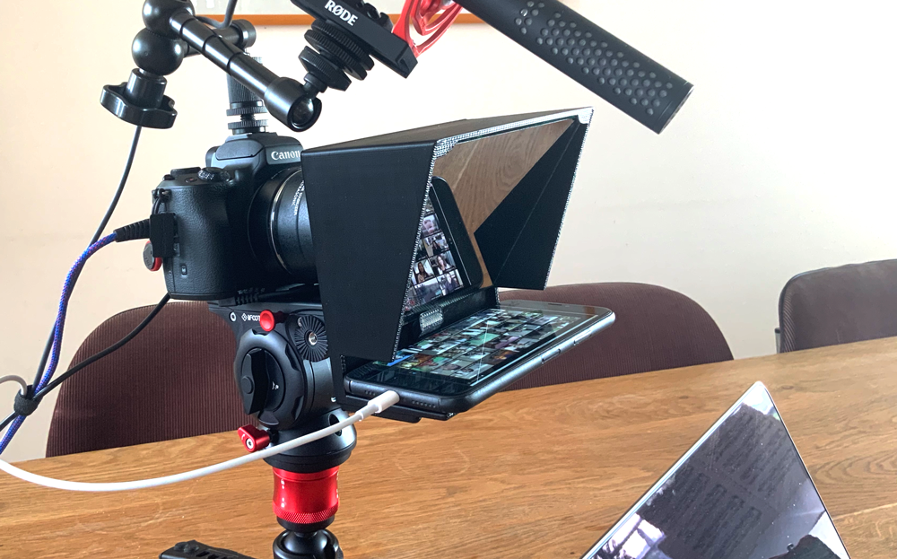
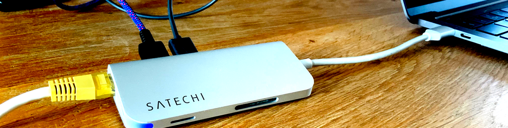

My Online Lecture Setup

Strap in there, because this is going to be a deep dive. In a previous blog post, I already described how you could use open broadcast software (OBS) to overly a logo or presentation on your webcam feed, and switch between scenes while presenting. Based on that experience, I recently gave a two-hour online workshop taking this to the next level. The video below shows live interaction with the students. In this post, I will elaborate on how to connect all the applications and the hardware I use.
As I recently switched back to the mac, this post focusses on the setup for the mac only. Though it also works on windows. Sometimes even easier.
Connecting OBS to zoom
Using OBS as the central hub for all video input means we have to get that video feed into zoom. For windows, this is easy with the OBS webcam plugin. Though on the MAC, we have to use the Network Device Interface (NDI) plugin to send out a video and convert that to a virtual camera, using the NDI Virtual input application, which is available in the NDITools package at NDI.tv.

While zoom initially supported virtual camera input, the current version 5.0.4 seems to break that support. Though by unsigning the zoom application, this problem can be resolved quickly. Just paste the following command in the terminal.
codesign --remove-signature /Applications/zoom.us.app
Now, we are finally ready to stream video from OBS to zoom, and at the same time, we can record or stream the OBS output in HD, which lands us at the next problem. The only audio recorded is your voice and not the questions or conversations with your students.
For OBS to pick up the sound from zoom, the audio needs to be redirected. For this purpose, the best application on the mac is Loopback. However, this will set you back $120. I tried a bunch of free alternatives, but none seemed to work consistently.
While this allowed me to record all the necessary audio and I could tell my students their faces would not end up online, the recordings do feel a bit eery, with student voices coming out of nowhere. To fix this problem, I added a spectralizer in OBS to visualize the audio from my students.
In my previous post on using OBS, I described using a second monitor to use as input for zoom. I recently realized this is not even needed. Because you can screen share in zoom using the same virtual camera input. Screen sharing in zoom forces the presenter mode on the students. So, you, as a teacher, are assured they are not just staring at each other.
Hardware
As I am an award-winning amateur photographer :-) I have some camera gear lying around.
So, instead of using my laptop webcam, I connect my canon M50 camera through USB, added a continuous power source, and attached my 24mm F2 canon EF lens for a nice wide-angle. For audio, I recently switched to the RodeVideoMic NTG. Attached to the cold shoe of my camera, with a magic arm, it makes for a pretty compact recording setup. Though, the icing on the cake is the 3D printed camera mounted teleprompter, which I use with my iPhone running an extra zoom session. This way, it is easier to look straight into the camera at your students asking questions.

With only one USB-c hub connected to my mac, the USB from the M50 and Mic go straight into the MacBook pro. The USB-c hub also supports a network cable, which is a must to ensure an uninterrupted connection.
Tying it all together
So, to run an online lecture, I fire up zoom on the computer and iPhone using the same account. iPhone in the teleprompter with all notifications and audio video turned off. I set the “starting in 5 minutes scene”, turn on screen sharing from 2nd camera (advanced tab) and hit record in OBS.